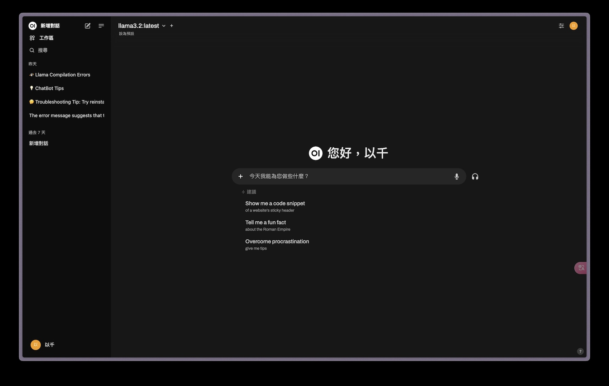
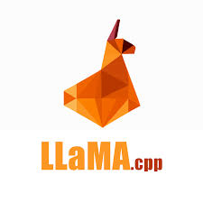
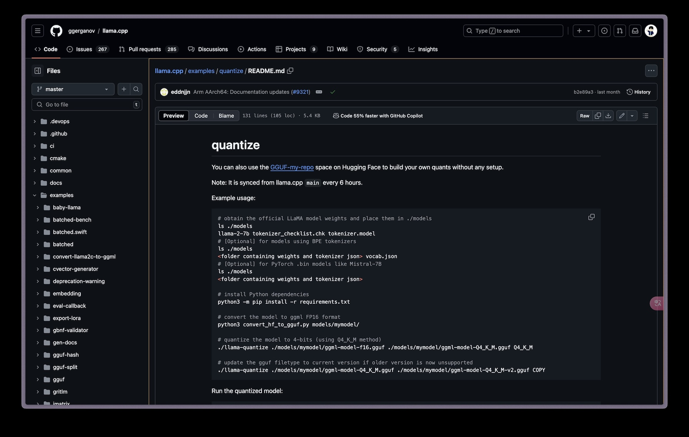
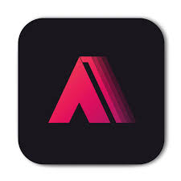
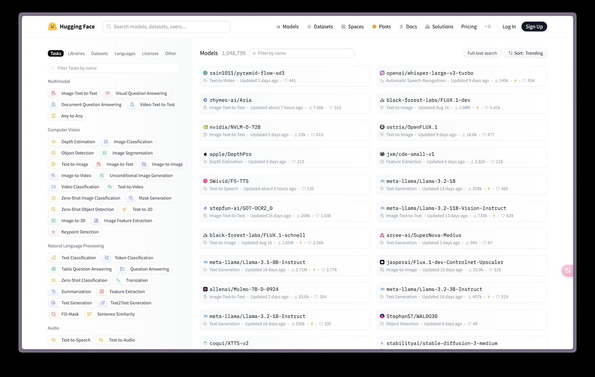

AI
以下是github專案和一些資源：
-
Open WebUI
這是一個可以調用ollama所提供的api來變成一個可視化的UI介面（原本的ollama只能在終端機跑）， 並且這個介面也提供了儲存知識庫讓你可以隨時讓語言模型查看，社群上也有很多其他人提供的不同面向的語言模型。
-
Unsloth
接下來要講到的是模型的一項技術：微調，微調可以讓模型在某一領域更專業，微調過程中非常需要依賴GPU的算力， 而unsloth就是一個可以減少微調過程中佔用GPU大小的程式，他也有提供google colab連線至雲端GPU來讓你微調。
-

llama.cpp
這是ollama的前身，不過他也包含了轉換模型格式，量化模型等好用的功能。
-

AUTOMATIC1111
接下來的兩個專案都適合AI產圖有關係，這個專案是專門為stable-diffusion設計的ui介面，介面很直觀，不過支持的模型並不多，靈活性也不如下一個要介紹的專案。
-
ComfyUI
這個專案跟上一個得差異在於這個專案的呈現方式是工作流，可以用模組化的方式呈現模型在算圖的時候流程是什麼， 因此靈活性也比較高，社群也有很多插件讓他支援更多種類的模型。
-
Huggingface
最後一個則是資源網站，這個網站上有非常非常多開源模型，並且不只模型，微調用的數據集也能在上面找到其他人事先製作好的，是個非常方便的網站。